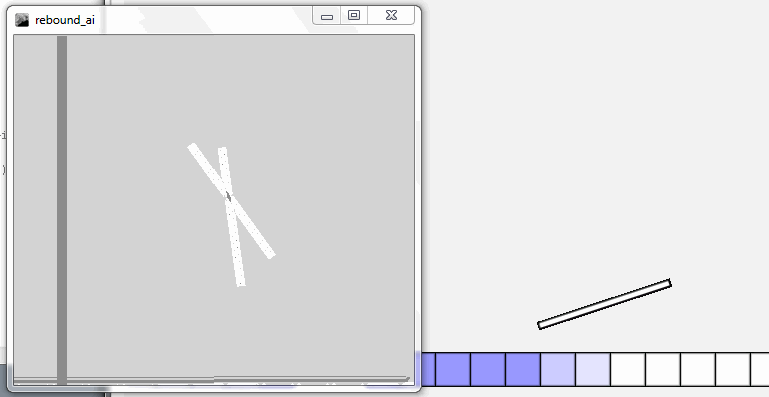

I attempted to make a simple AI for a flash game where the player must get a stick to a goal position just by rotating it as it falls and bounces. I wrote the code in Processing and used java.awt.Robot to interact with the running game. Unfortunately I wasn't able to tame the chaos of the stick's dynamics.